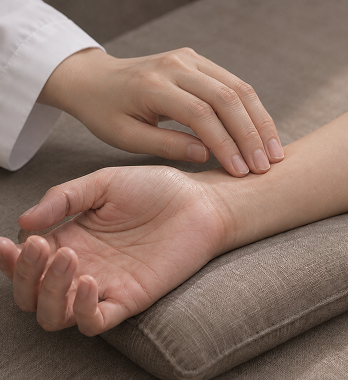
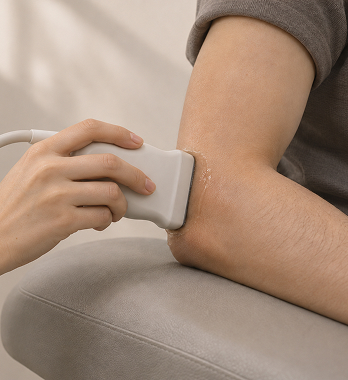
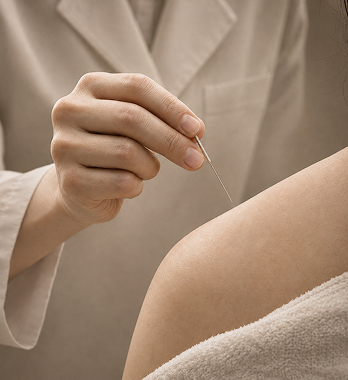
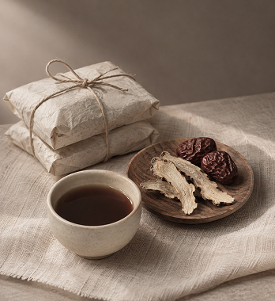
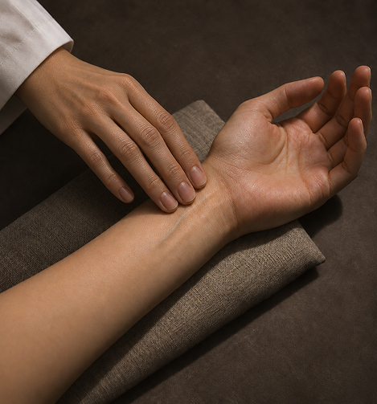

맥진으로 살피기
맥의 빠르기와 힘을 살펴 현재 몸 상태 파악
같은 증상에도 서로 다른 몸의 특성을 고려해
한 사람에게 필요한 처방을 고민합니다.
The First Clinic of Korean Medicine

맥의 빠르기와 힘을 살펴 현재 몸 상태 파악

초음파 영상으로 진찰 부위의 구조와 상태 확인

침치료 전후 환자가 느끼는 불편의 변화 확인

진찰 소견과 침치료 반응, 환자의 체질을 고려한 한약 처방
The First Clinic of Korean Medicine
개인의 증상과 생활, 진찰 내용을 함께 살펴 약재 구성과 복용 계획을 정합니다.
잠들기 어렵거나 자주 깨는지, 아침에도 피로가 남는지 살핍니다.
평소 식욕과 식사량을 묻고, 식후 더부룩함이나 속쓰림이 있는지 확인합니다.
배변 습관과 변의 상태를 살피고, 최근 체중 변화나 부기가 있었는지 확인합니다.
진단이나 치료를 받은 질환과 현재 복용 중인 약을 확인해 처방에 반영합니다.
The First Clinic of Korean Medicine

현재 몸 상태와 복용 목적을 살펴 녹용이 필요한지 판단합니다.
몸 상태에 맞춰 함께 처방할 약재를 정하고, 복용 방법을 안내합니다.
복용 후 몸 상태와 기존 불편감이 어떻게 달라졌는지 확인합니다.
The First Clinic of Korean Medicine
이근춘 원장의 임상 한약 경험과
공진단 처방의 핵심을 그대로 이어받아
정성껏 만듭니다.
제일한의원은 공진단을 무조건 처방하기보다, 최근 몸의 변화와
생활 습관을 확인하고 현재 상태에 맞춰 복용 여부를 상담합니다.
과로와 스트레스로 피로감이 심한 경우
요즘 들어 갑자기 부쩍 체력이 떨어졌다고 느끼는 경우
인지 능력 회복 및 개선이 필요한 경우
중풍을 예방하거나 회복을 돕고 싶은 경우
자꾸 깜빡이거나 중요한 시험, 면접을 앞둔 분
술자리가 잦거나 잠을 계속 자도 피곤한 경우
제일한의원은 공진단을 무조건 처방하기보다, 최근 몸의 변화와
생활 습관을 확인하고 현재 상태에 맞춰 복용 여부를 상담합니다.
피로가 언제 시작됐고 일상에 어떤 영향을 주는지 살핍니다.
평소 활동량과 최근 달라진 움직임을 확인합니다.
수면 시간과 잠에서 깬 뒤의 몸 상태를 살핍니다.
평소와 달라진 점과 불편을 느끼기 시작한 시점을 확인합니다.
음주 빈도와 식사 패턴 등 평소 생활 습관을 확인합니다.
치료 중인 질환과 수술 이력, 현재 복용 중인 약을 확인합니다.
The First Clinic of Korean Medicine
문진으로 증상과 생활 습관을 살피고, 맥진과 초음파 진찰 소견을 함께 검토합니다. 병력과 현재 복용 중인 약까지 확인한 뒤 처방을 정합니다.
네. 진료 시 복용 중인 처방약, 일반의약품, 건강기능식품을 알려주세요. 약 이름이 기억나지 않으면 처방전이나 약 봉투 사진을 보여주세요. 한약과 함께 복용할 때 주의할 점을 확인합니다.
복용 기간은 처방 목적과 현재 몸 상태에 따라 달라집니다. 첫 진료에서 복용 계획을 안내하고, 이후 몸의 변화와 불편감을 살펴 기간을 조정합니다.
녹용을 사용할지는 현재 몸 상태와 복용 목적, 병력과 복용 중인 약을 살펴 결정합니다. 녹용이 적합한 경우에는 함께 처방할 약재와 복용 방법을 설명합니다.
개별화 한약은 진찰 결과에 맞춰 약재와 용량을 정하는 방식이고, 공진단은 기본 약재 구성이 있는 한약 처방입니다. 진료에서 어떤 불편으로 복용을 고려하는지 먼저 듣고, 현재 몸 상태에 맞는 처방을 안내합니다.